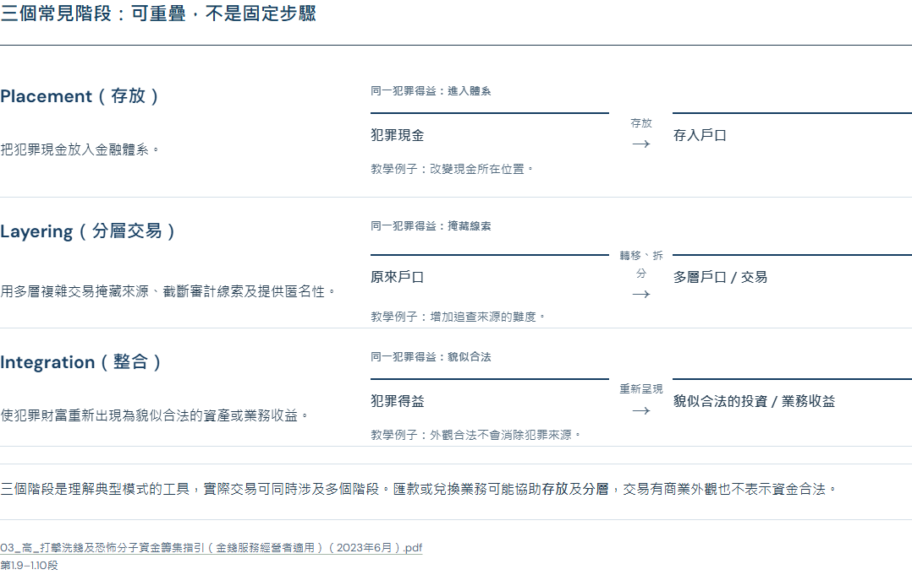
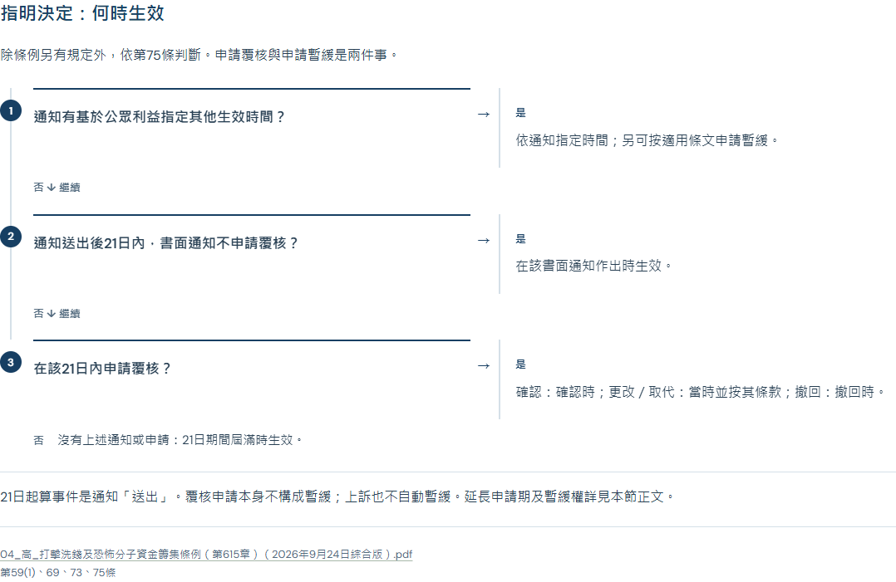
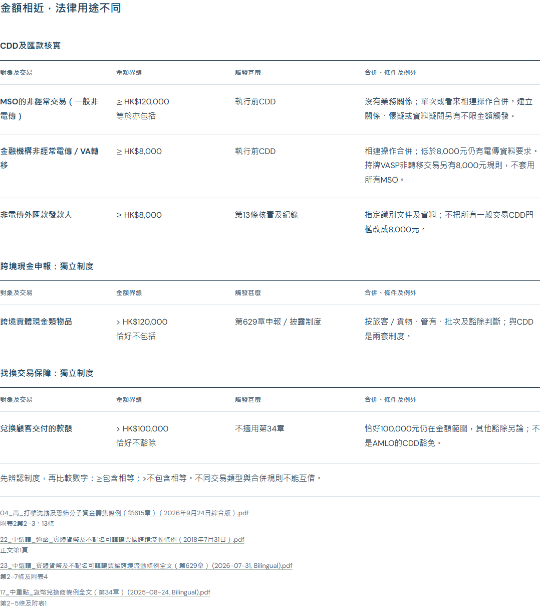
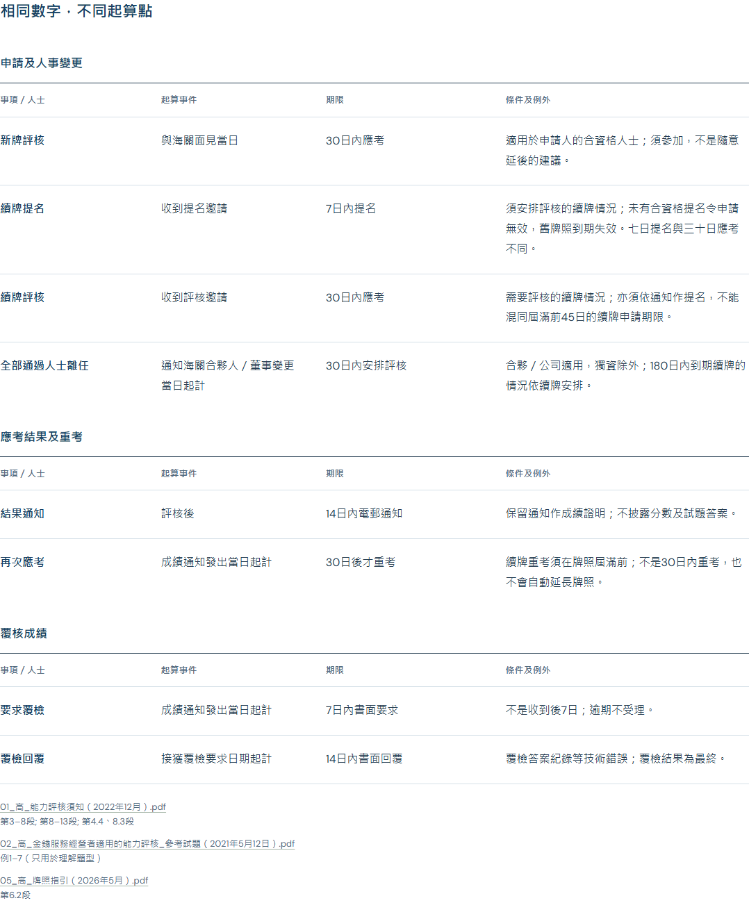
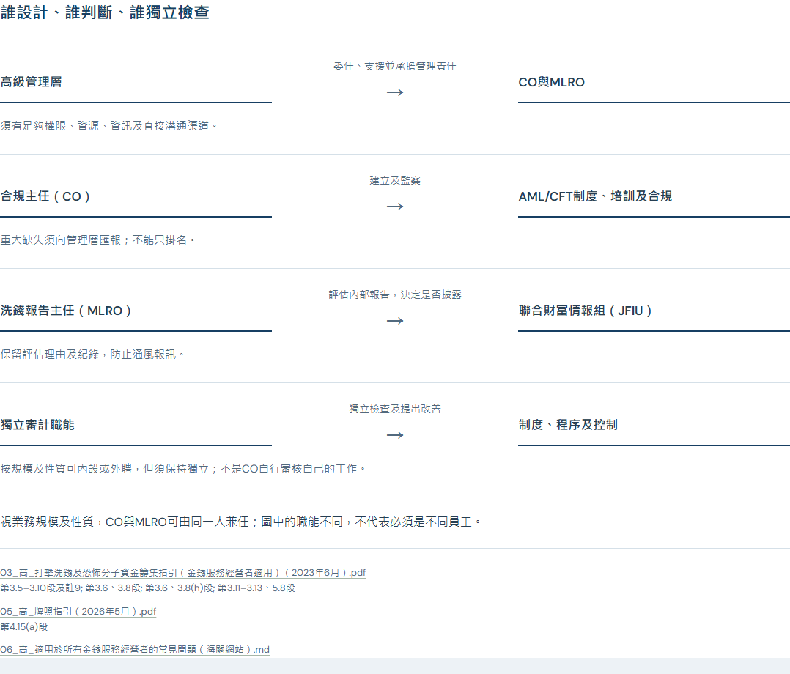
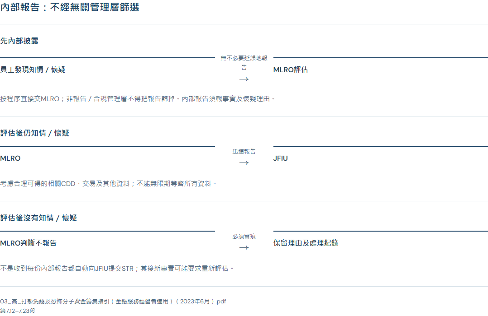

七個Part：已套用的圖解
以下是正式筆記的實際截圖。三種語言均可在閱讀頁切換；手機按語義單元排列，保留條件與原件引用。
開始閱讀 · 實施及驗證記錄
Part 1 · 洗錢三階段
開啟正式筆記 · 查看完整預覽

Part 2 · 指明決定生效
開啟正式筆記 · 查看完整預覽

Part 3 · 金額與適用制度
開啟正式筆記 · 查看完整預覽

Part 4 · 評核期限
開啟正式筆記 · 查看完整預覽

Part 5 · CO／MLRO／獨立審計
開啟正式筆記 · 查看完整預覽

Part 6 · CDD觸發條件
開啟正式筆記 · 查看完整預覽

Part 7 · 內部報告及JFIU
開啟正式筆記 · 查看完整預覽
